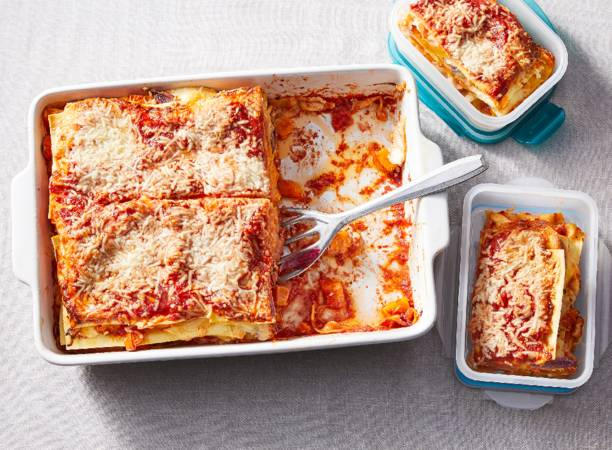

Lasagna

Description
Veel eters over de vloer of fan van mealpreppen? Deze XL lasagne geeft je genoeg voor maar liefst 8 porties!
480 kcal - 25 min bereiden - 1 uur 40 min wachten
Ingredienten
- Verwarm de oven voor op 200 °C. Halveer de pompoen, verwijder de pitten en draderige binnenkant en snijd de helften met schil in blokjes van 2 cm. Snijd de uien in parten, de tenen knoflook in dunne plakjes en de tomaten in grove stukken.
- Verdeel de pompoen, tomaat inclusief sap uit het blik, ui en knoflook over een met bakpapier beklede bakplaat. Besprenkel met de olijfolie en breng op smaak met zout en peper. Rooster ca. 25 min. in het midden van de oven, tot de pompoen zacht is. Neem uit de oven en laat iets afkoelen.
- Meng de passata met peper en eventueel zout. Pureer de geitenkaasschijfjes, eieren en ricotta met de staafmixer.
- Verdeel de helft van de passata over de bodem van de ovenschaal. Leg ⅓ van de lasagnevellen erop, gevolgd door ⅓ van het pompoen-uimengsel en ⅓ van het geitenkaasmengsel. Herhaal nog 2 keer en eindig met de rest van de passata. Bestrooi met de geraspte geitenkaas.
-
Bak 50-55 min. in het midden van de oven. Dek de bovenkant af met aluminiumfolie als die te donker wordt. Laat 10 min. afkoelen voor het serveren.
- Oranje pompoen
- Rode uien
- Knoflook
- Gepelde tomaten in blik
- Milde olijfolie
- Rode port
- Bietensap
- Maizena